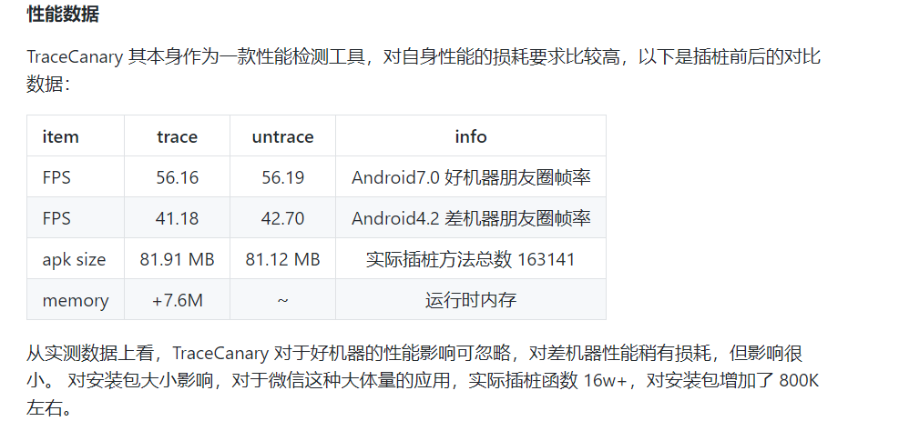

接入方法
- 在你项目根目录下的 gradle.properties 中配置要依赖的 Matrix 版本号，如：
MATRIX_VERSION=0.4.10
- 在你项目根目录下的 build.gradle 文件添加 Matrix 依赖，如：
dependencies {
classpath ("com.tencent.matrix:matrix-gradle-plugin:${MATRIX_VERSION}") { changing = true }
}
- 在 app/build.gradle 文件中添加 Matrix 配置插件和Bughunter依赖，如：
dependencies {
compile fileTree(include: ['*.jar'], dir: 'libs')
compile('com.xiaopeng.lib:lib_bughunter:1.4.0-matrix-SNAPSHOT') {
changing = true
}
}
apply plugin: 'com.tencent.matrix-plugin'
matrix {
trace {
enable = true
baseMethodMapFile = "${project.buildDir}/matrix_output/Debug.methodmap"
blackListFile = "${project.projectDir}/matrixTrace/blackMethodList.txt"
}
Demo 地址
输出得卡顿日志格式
tag[
Trace_EvilMethod
]type[
null
];key[
null
];content[
{
"process": "com.example.weijj.catontest", //包名,
"stackKey": "12\n", // 关键卡顿函数
"time": 1555644231966, // 执行时间
"detail": "NORMAL", //
"tag": "Trace_EvilMethod", // 慢函数
"subType": -1, // 默认 -1
"mem": 1846677504, // 内存
"cpu_app": 8.525233879496181E-4, //CPU使用
"stack": " 0,com.example.weijj.catontest.MainActivity mainThread (Landroid.view.View;)V,1,1280\n1,com.example.weijj.catontest.MainActivity decode ()V,1,1280\n", //卡顿堆栈
"machine": "MIDDLE",
"cost": 1288, //卡顿时间
"mem_free": 141132 // 甚于内存
}
]
原理差异对比

- lib_hunter 拿到主线程的Stack.
/**
* 收集主线程堆栈信息
*
* @return 堆栈信息
*/
private StackTraceElement[] getMainThreadStackInfo() {
if (mMainThread == null) {
mMainThread = Looper.getMainLooper().getThread();
}
return mMainThread.getStackTrace();
}
性能对比
